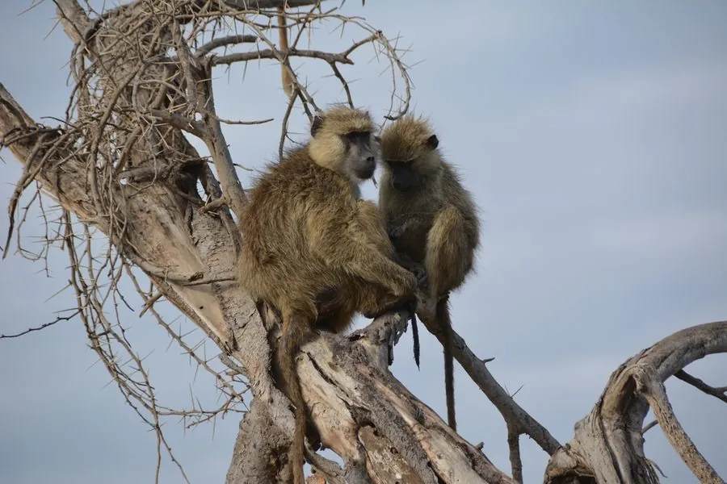

哺乳动物 · 动物界
草原狒狒 Papio cynocephalus

分布于东非与南部非洲开阔草原的黄褐色狒狒，四肢修长、尾长而弯垂，成群在地面觅食，是研究灵长类社会行为的经典对象。
- 分类
- 门脊索动物门纲哺乳纲目灵长目科猴科属狒狒属
- 栖息环境
- 开阔草原、稀树草原、河岸林地与灌丛，喜靠近季节性水源
- 地理分布
- 东非至南部非洲，包括肯尼亚、坦桑尼亚、赞比亚、津巴布韦等国
- 保护级别
- IUCN 无危（LC）
物种志
草原狒狒体长 50–110 cm，尾长 45–70 cm，雄性体重约 20–30 kg，雌性约 10–15 kg，体形比东非狒狒纤细。毛色为浅黄褐至沙黄色，背部略带灰调，面部黑色，吻部细长，尾长而向下弯垂，四肢修长，善于在地面快速行走。
它们分布于东非和南部非洲的开阔草原、稀树草原与河岸林地，范围包括肯尼亚、坦桑尼亚、赞比亚、马拉维、莫桑比克、津巴布韦和博茨瓦纳。群体通常 20–100 只，白天在地面觅食，夜晚登上大树或岩壁休息。食谱以果实、草籽、块根和昆虫为主，也捕食小型脊椎动物。妊娠期约 180 天，每胎一仔；豹、狮和斑鬣狗是主要天敌。
形态与习性
- 食性果实、草籽、块根、昆虫及小型脊椎动物
- 体长50–110 cm，尾长 45–70 cm
- 体重雄性 20–30 kg，雌性 10–15 kg
- 寿命野外约 20–25 年
- 繁殖妊娠期约 180 天，每胎一仔
- 活动节律昼行性，白天在地面觅食，夜间树上休息
趣味知识
- 草原狒狒的尾长而向下弯曲，是它与尾常拱起的豚尾狒狒最直观的区别之一。
- 它们会与黑斑羚、长颈鹿等混群活动，借助其他动物的警觉提高发现天敌的机会。
- 幼仔出生时毛色较深，约两三个月后逐渐转为成体的浅黄褐色。